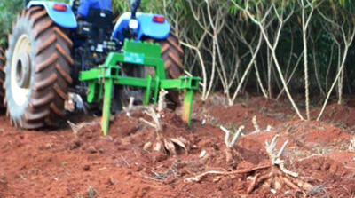

THE OPPORTUNITY
The development and adoption of a device to harvest cassava mechanically is one solution proposed to unlock the huge potential of cassava as food and for industry.
A prototype mechanical cassava harvester of 300 kg mass and one metre wide with slatted conical mouldboard has been developed and evaluated in Ghana and South Africa for large-scale cassava production. In tropical and subtropical Asia and the southern sub-tropics of South America cassava is a booming business with cassava changing from a traditional food crop to be a giant export-oriented industry, particularly in Vietnam and Thailand.
Cassava has a number of attributes that make it attractive as a crop to promote under any climate change adaptation strategy for sub-Saharan Africa. Cassava provides an excellent insurance against famine for farmers. To create awareness, field demonstration and advertising are to be stepped up to introduce and popularise the harvester to cassava farmers, entrepreneurs, policy makers and other stakeholders in the cassava value chain on the continent. Continuous scientific and technical backstopping by research team will sustain further improvement of the technology.

Efficient TEK Mechanical Cassava Harvester in operation